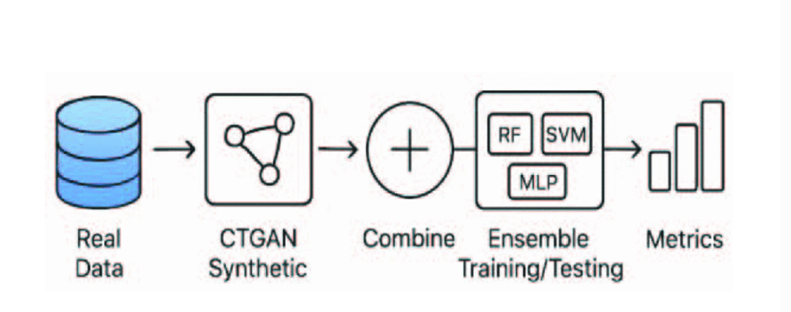

Enhancing Breast Cancer Classification Through GAN-Generated Synthetic Malignant Samples
IEEE FMLDS, 2025
Proposed a GAN-based minority-class augmentation approach for tabular clinical data using the UCI Wisconsin Breast Cancer dataset. Synthetic malignant samples were used to balance the training set for a soft-voting ensemble classifier.
Validation Accuracy: 98.07% · F1-score: 97.40%